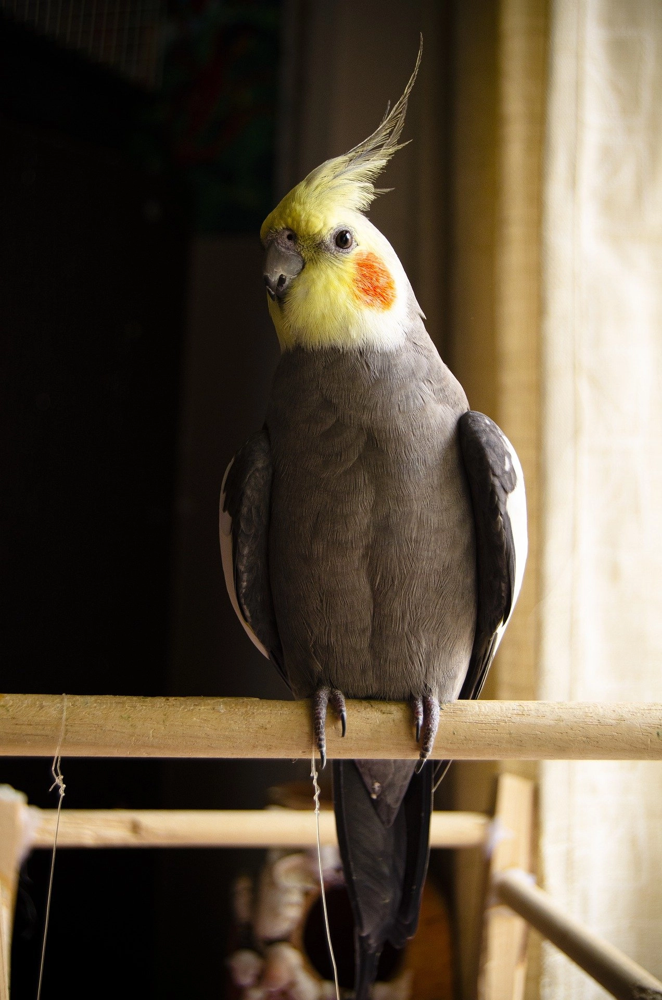

Datos Mascota:
Información principal--
Nombre mascota: Pepe
Especie: Ave
Raza: Cacatúa ninfa (Nymphicus hollandicus)
Sexo: Macho
Edad: 5 años
Color: Gris perlado con mejillas anaranjadas
Aqui esta una foto para su referencia:

Información adicional--
Comportamiento: Muy curioso y agresivo a su vez
Convivencia: Se lleva bien con los humanos pero no con las aves
Horarios: Activa durante la mañana y tarde
Información propietario--
Nombre: Aldemar Cataño
Telefono: 3158108606
Correo: acatano63@ucatolica.edu.co
Dirección: Puente Aranda, Galán